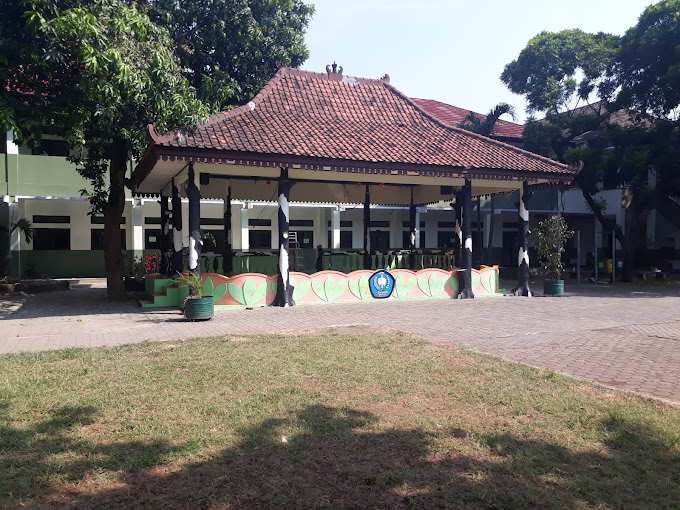

Tentang

Nama saya Duanda Mahaputra, bisa dipanggil Duanda. Saya berumur 26
Tahun. Saya lulusan Teknik Elektro yang memiliki passion di
pemrograman web khususnya Frontend. Seorang Frontend Web Developer
adalah seorang profesional dalam dunia pengembangan perangkat
lunak yang memiliki keahlian khusus dalam merancang dan
mengembangkan antarmuka pengguna (UI) dari aplikasi web. Mereka
bertanggung jawab untuk menciptakan pengalaman pengguna yang
menarik, intuitif, dan responsif di halaman web. Frontend Web
Developer memainkan peran penting dalam menciptakan pengalaman
pengguna yang memikat dan efektif di situs web. Mereka membawa
desain dari konsep menjadi kenyataan digital, memastikan bahwa
pengguna dapat berinteraksi dengan situs web dengan mudah dan
intuitif.
Edukasi
Secara umum, edukasi adalah suatu proses pembelajaran yang dilakukan
baik secara formal maupun non formal yang bertujuan untuk mendidik,
memberikan ilmu pengetahuan, serta mengembangkan potensi diri yang
ada dalam diri setiap manusia, kemudian mewujudkan proses
pembelajaran tersebut dengan lebih baik. Edukasi memiliki beberapa
tujuan, berikut ini tujuan edukasi adalah Meningkatkan kecerdasan,
Merubah kepribadian manusia suapaya memiliki akhlak yang terpuji,
Menjadikan mampu untuk mengontrol diri, Meningkatkan keterampilan,
Bertambahnya kreativitas pada hal yang dipelajari, Mendidik manusia
menjadi lebih baik dalam bidang yang ditekuni.
SMAN 1 Bekasi

SMA Negeri 1 Bekasi merupakan SMA Negeri pertama yang ada di Bekasi
dan diresmikan pada tahun 1963. Dahulu alamatnya berada di Jl. KH
Agus Salim No. 77. Namun telah berganti menjadi Jl. KH Agus Salim
No. 181. Sampai tahun 2010, sekitar 45 angkatan alumni telah
berhasil lulus dengan jumlah alumninya yang begitu besar. SMA Negeri
1 Bekasi telah mencetak alumni-alumni yang berhasil bersaing di
universitas-universitas ternama.
Universitas Muhammadiyah Yogyakarta

Niat untuk mendirikan Universitas Muhammadiyah Yogyakarta (UMY)
telah ada sejak lama. Prof. Dr. Kahar Muzakkir dalam berbagai
kesempatan melemparkan gagasan perlu didirikannya Universitas
Muhammadiyah. Ketika Pimpinan Pusat Muhammadiyah Majelis Pengajaran
meresmikan Fakultas Keguruan dan Ilmu Pendidikan (FKIP) di
Yogyakarta pada tanggal 18 November 1960, secara eksplisit piagam
pendiriannya mencantumkan FKIP sebagai bagian dari Universitas
Muhammadiyah. Barulah pada bulan Maret 1981, melalui perjuangan yang
keras beberapa aktivis Muhammadiyah seperti Drs. H. Mustafa Kamal
Pasha, Drs. M. Alfian Darmawan, Hoemam Zainal, S.H., Brigjen. TNI.
(Purn.) Drs. H. Bakri Syahid, K.H.Ahmad Azhar Basir, M.A.,
Ir.H.M.Dasron Hamid, M.Sc., H.M. Daim Saleh, H.M.H. Mawardi, Drs. H.
Hasan Basri, Drs. H. Abdul Rosyad Sholeh, Zuber Kohari, Ir. H. Basit
Wahid,H Tubin Sakiman, Drs. Ahmad Fadhil yang gigih mencari
Mahasiswa serta didukung oleh Ketua Pimpinan Pusat Muhammadiyah saat
itu, K.H. A. R. Fakhrudin dan Ketua Pimpinan Wilayah Muhammadiyah
DIY H. Mukhlas Abror, secara resmi didirikan Universitas
Muhammadiyah Yogyakarta, yang kemudian berkembang hingga saat ini.
Hobi
Sepak Bola
Melansir Britannica, sepak bola adalah permainan dimana dua tim yang
terdiri dari 11 orang mencoba mengarahkan bola ke gawang lawan.
Pemain harus membobol gawang lawan menggunakan anggota tubuh kecuali
tangan dan lengan. Hanya penjaga gawang yang boleh memegang bola.
Itupun hanya berkutat di area pinanti yang mengelilingi gawang.
Tujuan dari permainan ini adalah mencetak lebih banyak gol dari pada
lawan. Tim yang mencetak gol lebih banyak akan keluar sebagai
pemenangnya.
Musik

Musik dikenal sejak kehadiran manusia modern Homo sapiens yakni
sekitar 180.000 hingga 100.000 tahun yang lalu. Tidak ada yang tahu
kapan manusia mulai mengenal seni dan musik. Dari penemuan arkeologi
pada lokasi-lokasi seperti pada benua Afrika, sekitar 180.000 tahun
hingga 100.000 tahun lalu telah ada perubahan evolusi pada otak
manusia. Dengan otak yang lebih pintar dari hewan, manusia merancang
pemburuan yang lebih terarah sehingga bisa memburu hewan yang besar.
Dengan kemampuan otak seperti ini, manusia bisa berpikir lebih jauh
hingga di luar nalar dan menggunakan imajinasi dan spiritual. Bahasa
untuk berkomunikasi telah terbentuk di antara manusia. Dari bahasa
dan ucapan sederhana untuk tanda bahaya dan memberikan nama-nama
hewan, perlahan-lahan beberapa kosakata muncul untuk menamakan benda
dan memberikan nama panggilan untuk seseorang.